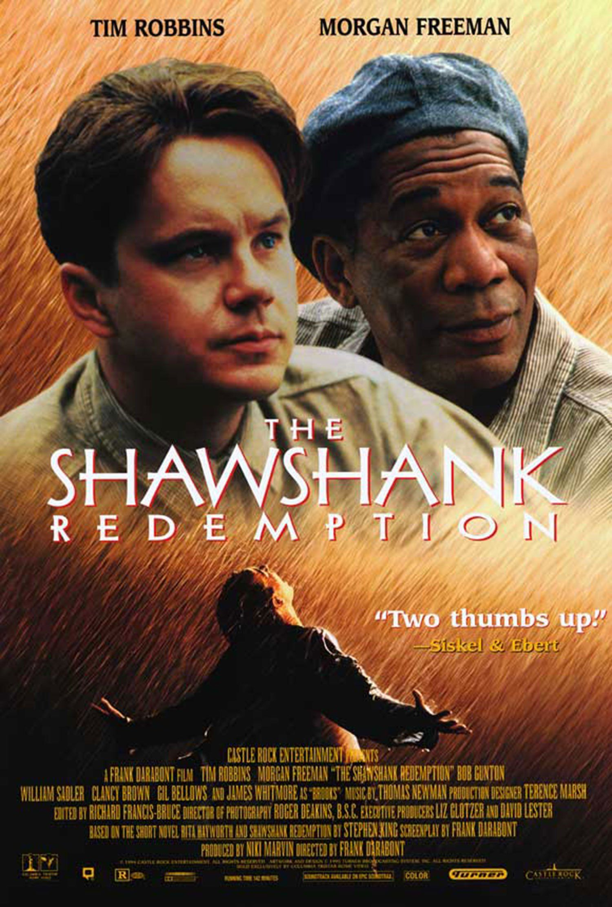
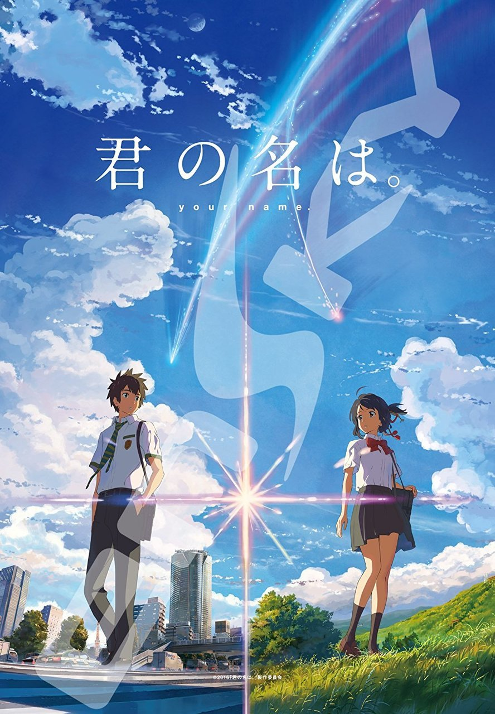
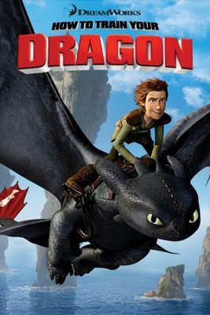

-> TOP 3 MOVIES THAT I WOULD RECOMMEND <-

These are my top 3 favourite movies that I would absolutely recommend you to watch. During this period of quarantine, when we all are slowly turning insane from boredom or overthinking, it'd be great to rest our minds with some great content to watch (or even rewatch)! Though most of us are already quite occupied with many things to do, but if you ever get bored from all those and run out of things to do or if you just wanna chill for a while 😎, I recommend these!
1) The Shawshank Redemption :

Imdb Rating : 9.3/10
I have never seen such an amazing film since I saw The Shawshank Redemption. Shawshank encompasses friendships, hardships, hopes, and dreams. And what is so great about the movie is that it moves you, it gives you hope. Even though the circumstances between the characters and the viewers are quite different, you don't feel that far removed from what the characters are going through.
It is a MUST WATCH for sure!
Watch Trailer
2) Kimi no Na Wa :

Imdb Rating : 8.4/10
Your Name is a piece of art! It iss clever, emotional, and left me hooked all the way. The twist was done really well. Also, the animation is gorgeous. You get to see detailed images from many angles and perspectives, and there were hundreds of animators! Kimi no Nawa is not just any anime movie. It has the potential to be viewed and studied as art cinema. It's so beautifully crafted and meticulously detailed with a great story plot!
Watch Trailer
3) How to train your Dragon :

Imdb Rating : 8.1/10
Incredible! From the first to the last frame this film is as good as an animated film gets on almost every level. Beautifully written, designed and executed. This movie is constituted by great story line, splendid background music, amazing animation and breathtaking brawls. As for the story line, I can tell that it is very unique as well as heart touching. You will definitely enjoy while watching the movie. One will enjoy wild but growing friendship between Hiccup and the dragon.
Watch Trailer
Made with &heart; by Amruta Koshe